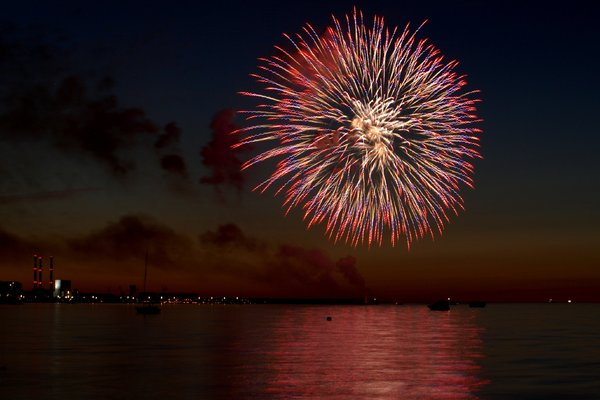

CS184 Final Project
Realistic Firework Rendering/Simulation
Frank Cuoco :: Lucas Huang :: Manh Khang Le :: Haoshen Ouyang
April 26, 2022 :: Project Milestone
Work so far:
- Generated dae file that stimulates fireworks before passing to the renderer.
- Adding objects of different materials to the scene.
- Implemented light intensity calculations upon the simulated light sources (particles), as follows:

The C values are the red, green and blue color components, and the R, G, and B values are of the light at the source.
Progress Reflection:
Our group has taken time to understand how to best utilize Blender for producing scenes that we will use in our firework
simulation. Once we passed this hurdle, our progress so far has been smooth. We plan to meet regularly going forward to
develop our full realistic firework simulation as imagined into reality.
Updated Work Plan:
- 4/28: Ensure the particles of the firework are light sources; add multiple fireworks, give fireworks different color(s)
- 4/29: Add surroundings that mimic buildings (most likely glass and concrete)
- 4/30-5/1: Ensure that the firework is properly lighting the surroundings
- 5/2-5/3: Exporting the Blender file as a .dae file, importing it into our Project 3, and ensuring the render is made properly
- 5/4: Stitch multiple .dae renders together to get final firework simulation video
- 5/4: Prep final presentation deliverables
Link to Slides: https://docs.google.com/presentation/d/1NpIsW_s3XCrE-UzkJFGIPe7SV_jh_A2wfo3qFb95_Iw/edit?usp=sharing
Link to Video: https://drive.google.com/file/d/14-9pgkcvspxj2UCxCmErV_ZVYhKdvphx/view?usp=sharing
Link to Website: https://cal-cs184-student.github.io/sp22-project-webpages-Lukatastic/final/index.html
April 11, 2022 :: Project Proposal

Summary
We aim to make a renderer that can produce realistic looking videos/gifs of fireworks lighting up nearby objects like
water, buildings,
etc as they are fired into the air and then deflagrate.
Problem Description:
- Problem 1: Simulate a realistic firework
- Potential solution: simulate the firework particles’ dynamics (shapes, trails, mousing, blinking)
- Problem 2: Dynamically lighting the surrounding objects as the firework is shot
- Potential solution: blending and mixing lights from multiple sources (light sources + reflective sources + brightness +
color)
Goals and Deliverables:
- We plan to deliver a simulation capable of producing a video/gif of one firework being shot up, exploding, and lighting
up its surroundings (water and metal buildings) along the way. If things go ahead of schedule, we hope to be able to
produce videos with multiple fireworks of different colors being shot at different times, along with many additional
surroundings (grass, dirt, glass/concrete buildings). We will measure the quality/performance of our deliverable by
comparing its realism to actual videos of fireworks in similar environments, along with the smoothness of the video/gif
(frames per second).
- Most of the questions that we receive from the presentation may be related to the particle effects/physics of the
firework, since it will expand the topic of particle systems from lecture and Project 4.
Schedule:
- Week 1: Firework light source completed
- Week 2: Surroundings implemented + properly lit by firework light source (direct + indirect lighting)
- Week 3: Scene is fully animated (firework movement, explosion, and lighting)
- Week 4: (If time permits) multiple fireworks at once + additional surroundings implemented
Resources:
There are two potential directions we could go. The first would be to use Project 3-1 as a starting point, and then
create a video by taking many screen shots at different times and stitching them together. The pros of this would be
that we’re familiar with the codebase, but the cons would be that it may be more difficult to code a firework in this
environment, given its complexity. The other direction would be to use an engine like Unity. This would make it easier
for us to make animated things like fireworks and water effects, but would be more difficult to learn since none of us
have experience using Unity.
Our webpage is at https://cal-cs184-student.github.io/sp22-project-webpages-Lukatastic/final/index.html